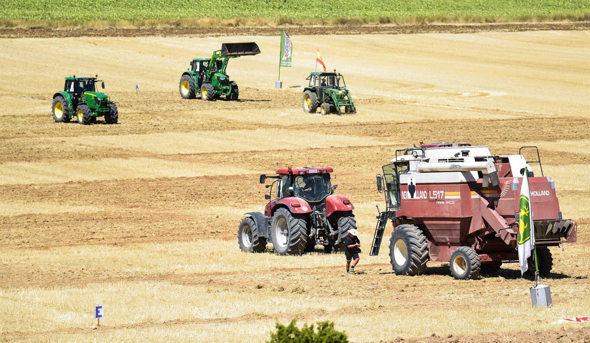

Las nuevas máquinas de Manolo lo hacen arrasar en el mercado

San Isidro del Campo, 6 de enero de 2026. La comarca vive días de conmoción y debate tras conocerse que la histórica finca de cultivos de Manolo R. G., de 57 años, ha iniciado un proceso de transformación radical: dejar atrás la agricultura tradicional hecha a mano para adoptar maquinaria moderna y sistemas automatizados. Lo que para muchos es un paso inevitable hacia el futuro, para Manolo supone una herida profunda, casi una traición a la forma de vida que ha defendido durante décadas. La noticia ha corrido como la pólvora entre agricultores, cooperativas y vecinos, que ven en este cambio un símbolo del fin de una era. Una finca con historia y raíces profundas La finca de Manolo, situada a las afueras de San Isidro del Campo, ha sido durante generaciones un ejemplo de agricultura tradicional. Su padre y su abuelo trabajaron la tierra con mulas, azadas y manos curtidas por el sol. Manolo continuó esa tradición desde joven, convencido de que la esencia del campo estaba en el contacto directo con la tierra. Durante años, su finca fue conocida por la calidad de sus tomates, pimientos, alcachofas y frutales. No producía en grandes cantidades, pero lo que salía de allí tenía un sabor que muchos consideraban imposible de replicar con métodos industriales. “Manolo siempre decía que la tierra te habla, pero solo si la tocas”, recuerda un vecino. “Para él, una máquina no puede escuchar”. El golpe económico que lo cambió todo Sin embargo, los últimos años han sido especialmente duros para la agricultura tradicional. La sequía prolongada, el aumento del precio del agua, la competencia de grandes explotaciones mecanizadas y la caída de los márgenes de beneficio han puesto contra las cuerdas a pequeños agricultores como Manolo. A finales del año pasado, la finca registró pérdidas históricas. Los cultivos no alcanzaron el rendimiento esperado, varias cosechas se perdieron por falta de mano de obra y los costes de mantenimiento superaron con creces los ingresos. “Llegó un punto en el que ya no podía sostenerlo”, confesó Manolo en una breve declaración. “O cambiaba… o cerraba”. La decisión que más le ha dolido Tras meses de dudas, reuniones con asesores agrícolas y noches sin dormir, Manolo tomó la decisión que nunca pensó que tomaría: mecanizar la finca. Tractores de última generación, sistemas de riego automatizado, sensores de humedad, drones para supervisar cultivos y maquinaria de recolección sustituirán progresivamente el trabajo manual que ha caracterizado su explotación durante décadas. La primera máquina llegó hace apenas una semana. Un tractor moderno, brillante, con más botones de los que Manolo había visto en su vida. Los vecinos que lo vieron descargarse del camión aseguran que él estaba allí, en silencio, con los brazos cruzados y la mirada clavada en el suelo. “Parecía un velatorio”, dijo uno de ellos. “No era alegría. Era resignación”. Un cambio que afecta a toda la comunidad La mecanización no solo transforma la forma de trabajar la tierra, sino también la vida de quienes dependían de ella. Durante años, la finca de Manolo había dado empleo a trabajadores temporales y jornaleros de la zona. Muchos de ellos temen ahora perder su sustento. “Manolo siempre nos llamaba cuando había que plantar o recoger”, cuenta un jornalero. “Ahora dice que las máquinas harán la mayor parte. ¿Y nosotros qué hacemos?” Las cooperativas locales también observan el cambio con preocupación. Aunque reconocen que la mecanización puede aumentar la productividad, temen que la identidad agrícola de la comarca se diluya. “San Isidro del Campo siempre ha sido tierra de manos, no de motores”, afirmó una portavoz de la cooperativa. “Esto marca un antes y un después”. La lucha interna de Manolo Quienes lo conocen aseguran que Manolo está viviendo un conflicto emocional profundo. Por un lado, sabe que la mecanización es la única forma de mantener viva la finca. Por otro, siente que está renunciando a una parte esencial de su identidad. “Él no quería máquinas”, explica un amigo cercano. “Quería seguir como siempre, pero el mundo ya no es como antes”. Manolo ha confesado que lo que más le duele no es el cambio en sí, sino la sensación de estar traicionando la memoria de su familia. Su padre le enseñó a plantar siguiendo las fases de la luna, a escuchar el viento para saber cuándo regar, a reconocer la tierra por su olor. Nada de eso aparece en los manuales de las nuevas máquinas. “Mi padre decía que la tierra te devuelve lo que le das”, comentó Manolo. “Pero ahora… no sé qué le estoy dando”. Un futuro incierto, pero inevitable Los expertos agrícolas consultados coinciden en que la mecanización es un paso necesario para sobrevivir en un mercado cada vez más competitivo. Sin embargo, también reconocen que la transición puede ser emocionalmente devastadora para agricultores que han construido su vida alrededor de métodos tradicionales. “Es un duelo”, afirma un especialista. “No solo se cambia la forma de trabajar, se cambia la relación con la tierra”. La finca de Manolo ya ha comenzado su transformación. Los primeros sensores han sido instalados, el nuevo sistema de riego está en pruebas y se espera que las máquinas de recolección lleguen en los próximos meses. La producción podría aumentar hasta un 40%, según estimaciones técnicas. Pero para Manolo, las cifras no alivian el peso emocional. “Si esto salva la finca, bien”, dijo con voz apagada. “Pero no sé si me salva a mí”. La comarca observa, entre nostalgia y temor Mientras la finca cambia, la comunidad observa con sentimientos encontrados. Algunos ven en la mecanización una oportunidad para modernizar la agricultura local. Otros sienten que se está perdiendo algo irremplazable. En los bares del pueblo, el tema es conversación diaria. Hay quienes defienden a Manolo, quienes lo critican y quienes simplemente lamentan que el mundo rural esté cambiando tan rápido. “Esto no es solo una finca”, dijo un vecino. “Es un símbolo. Y verlo transformarse así… duele”. Un final abierto La historia de Manolo no ha terminado. Su finca está en plena transición, y él mismo está aprendiendo a convivir con un futuro que nunca quiso, pero que ahora necesita. La mecanización puede salvar su explotación, pero el precio emocional es alto. Quizá, con el tiempo, encuentre un equilibrio entre tradición y modernidad. O quizá siga sintiendo que cada máquina que entra por su camino es un recordatorio de lo que ha perdido. Por ahora, lo único seguro es que la finca de Manolo ya no será la misma. Y él tampoco.